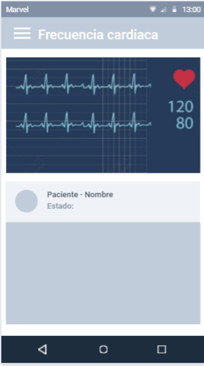
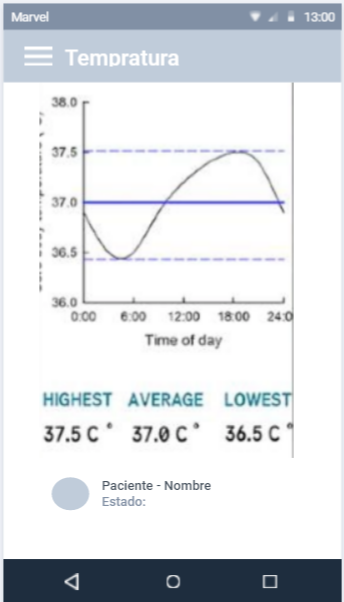
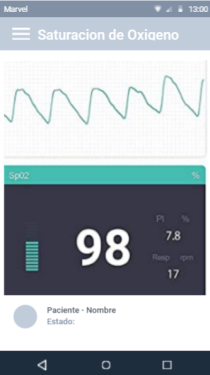
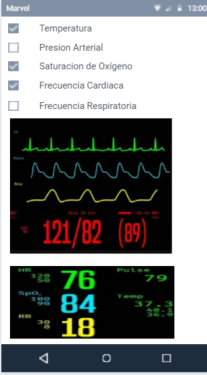

Diseño de Software
Simulación Tinkercad
Gráficas
- Sensor MAX30100
- Sensor DS18b20
- Sensor Mpx2050
- Sensor de humedad DHT11
El sensor capta la frecuencia cardiaca y la saturación de oxígeno,esto mediante las librerías open source disponibles para arduino. Para hacer la conversión a una gráfica; se adicionará el parámetro de tiempo, el software solo grafica las coordenadas X e Y durante intervalos de tiempo de 2 segundos mientras sigue tomando los mismos signos vitales.
El sensor capta la temperatura, esto mediante las librerías open source disponibles para arduino. Para hacer la conversión a una gráfica; se adicionará el parámetro de tiempo, el software solo gráfica las coordenadas X e Y durante intervalos de tiempo de 2 segundos mientras sigue tomando el mismo signo vital.
El sensor capta la presión diferencial entre sistólica y diastólica, esto mediante las librerías open source disponibles para arduino. Para hacer la conversión a una gráfica; se adicionará el parámetro de tiempo, el software solo gráfica las coordenadas X e Y durante intervalos de tiempo de 2 segundos mientras sigue tomando el mismo signo vital.
A nivel de software se dispone de librerías para Arduino con soporte para el protocolo "Single bus" En comparación con el DHT22 y DHT21, este sensor es menos preciso, exacto y funciona en un rango más pequeño de temperatura / humedad, pero su empaque es más pequeño y de menor costo.
